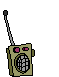
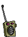

welcome to plainoldcheese's ham hub
some useful links!
- what modes are on what bands? this can help, and this too!
- ham modes and how to figure out what you are hearing
- qso log book of the world
- other cool ham stuff
- aprs on baofeng
 

this website is best viewed on a real computer! 💻